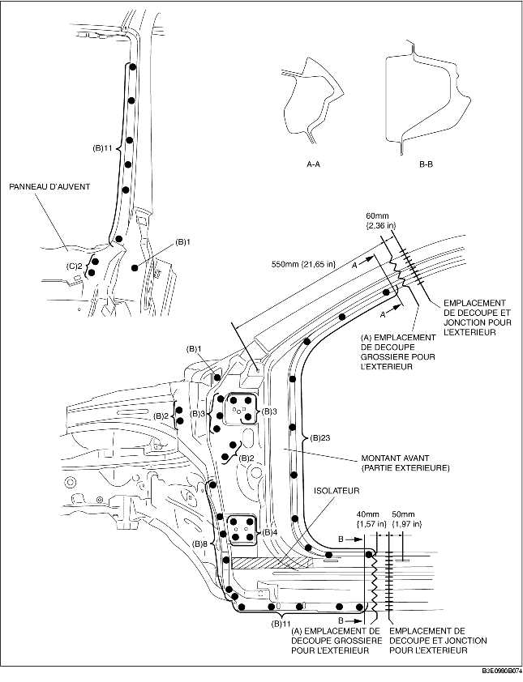
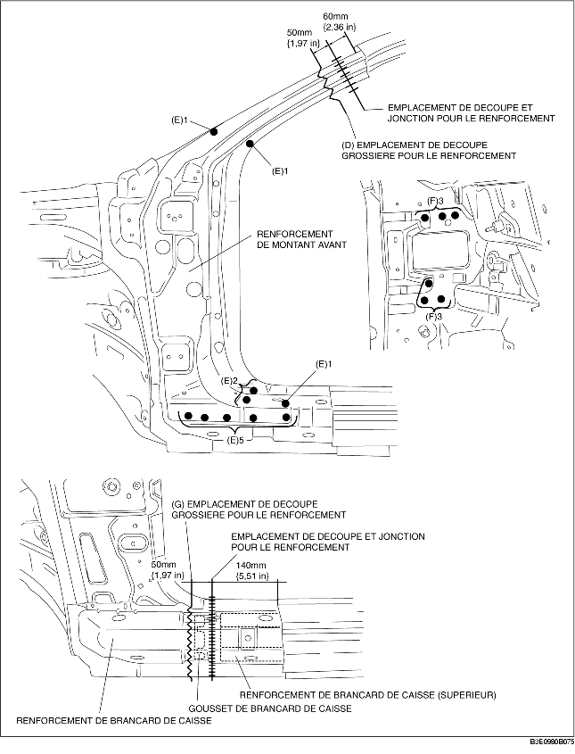
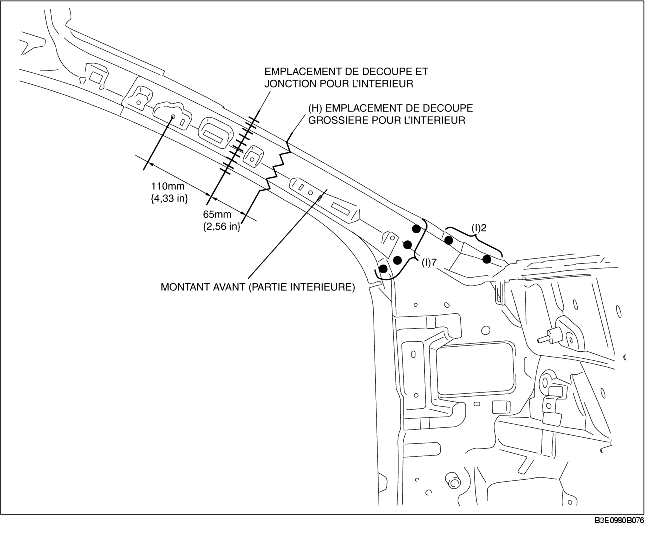

1. Découper grossièrement la zone (A) et percer aux 69 emplacements indiqués par (B).
2. Une fois le montant avant (extérieur) déposé, la grille d'auvent pourrait interférer avec ce dernier et compliquer la dépose. Il est donc important de percer aux 2 emplacements indiqués par (C) puis d'ouvrir la grille d'auvent vers l'extérieur.
3. Déposer le montant avant (extérieur).

4. Découper grossièrement la zone (D) et percer aux 10 emplacements indiqués par (E).
5. Placer aux 6 emplacements indiqués par (F), depuis l'intérieur.
6. Déposer le renforcement du montant avant.
7. Découper grossièrement la zone (G) puis déposer le renforcement de longeron.

8. Découper grossièrement la zone (H), percer aux 9 emplacements indiqués par (I)puis déposer la partie intérieure montant avant.
